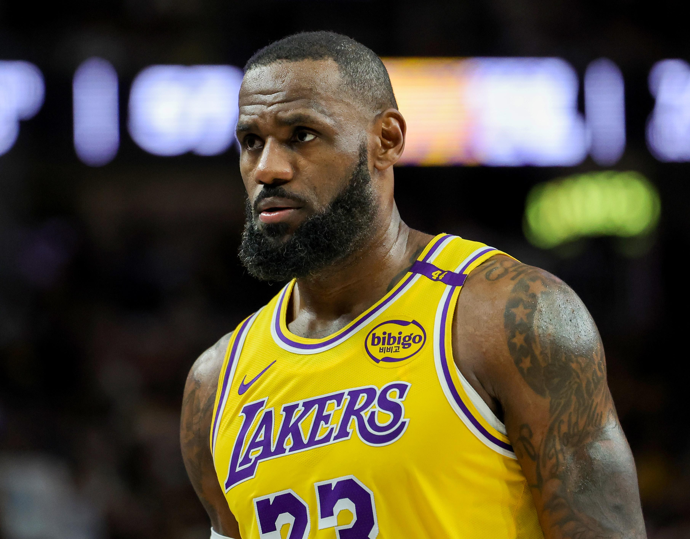

LeBron Raymone James, born on December 30, 1984, in Akron, Ohio, was shaped by his challenging upbringing under the care of his mother, Gloria James. Despite financial instability and frequent relocations, he found solace in basketball, showcasing his remarkable talent early on. For LeBron, basketball transcended mere sport; it served as a crucial lifeline amidst adversity.

LeBron James gained national fame while attending St. Vincent–St. Mary High School, leading his team to several state championships. Dubbed “The Chosen One” by Sports Illustrated, he became the most anticipated NBA prospect, eventually being selected first overall by the Cleveland Cavaliers in 2003, marking his return to his hometown.
LeBron’s arrival in Cleveland transformed the franchise overnight. He won Rookie of the Year and quickly became one of the league’s most dominant players. In 2007, he led the Cavaliers to their first NBA Finals appearance, signaling that he was capable of carrying an entire city’s hopes on his shoulders. Though the team fell short, the experience fueled his hunger for greatness.
In 2010, LeBron made the controversial decision to leave Cleveland for the Miami Heat. The move sparked intense criticism, but it also marked a turning point in his career. In Miami, he learned how to win at the highest level. Alongside Dwyane Wade and Chris Bosh, LeBron captured two NBA championships and two Finals MVP awards. He refined his game, sharpened his leadership, and emerged not just as a superstar, but as a complete, championship‑caliber player.
In 2014, LeBron James returned to Cleveland to win the city’s long-awaited championship, achieved in 2016. Trailing 3–1 in the NBA Finals against the Golden State Warriors, LeBron's remarkable performance culminated in a legendary chase-down block in Game 7, symbolizing resilience. This victory ended a 52-year championship drought and solidified LeBron's legacy as a hometown hero.
In 2018, LeBron signed with the Los Angeles Lakers, embracing a new challenge and a new stage. Two years later, in the unprecedented environment of the NBA bubble, he led the Lakers to the 2020 championship and earned his fourth Finals MVP.
LeBron’s impact extends far beyond the court. He became the first active NBA player to reach billionaire status, built a media empire, and launched the LeBron James Family Foundation. His I PROMISE School in Akron stands as one of his proudest achievements, offering education, stability, and opportunity to children facing challenges similar to those he once faced.
LeBron James is more than a basketball icon. He is a symbol of perseverance, reinvention, and purpose. From a kid in Akron with a dream to one of the most influential athletes in history, his story continues to evolve.